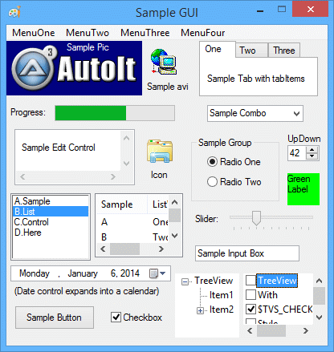

AutoIt позволяет создавать простые графические интерфейсы пользователя (GUI), состоящие из окон и контролов.
GUI состоит из одного или нескольких окон, и каждое окно содержит один или несколько контролов. GUI работают по принципу "событий" – вы реагируете на события, например на щелчок по кнопке. Большую часть времени скрипт простаивает в ожидании события – это немного отличается от обычного скрипта, где вы сами управляете тем, что и когда происходит! Представьте, что вы ждёте у двери почтальона: сидите, пока в почтовый ящик не упадёт письмо, после чего смотрите, что пришло, и решаете, что с ним делать. Именно так работают GUI – вы ждёте, пока к вам придёт "почтальон".
Конечно, во время работы GUI можно выполнять и другие задачи – например, использовать функции GUI для создания подробного окна прогресса, которое обновляется во время сложных действий скрипта.
Все пользователи знакомы с контролами – всё, на что вы щёлкаете или с чем взаимодействуете в окне, является каким-либо контролом. Ниже перечислены типы контролов, которые можно создать в AutoIt – большинство из них вам встречалось в других программах для Windows.
|
Простой текст. |
|
Простая кнопка. |
|
Однострочное поле для ввода текста. |
|
Многострочное поле для ввода текста. |
|
Флажок, который можно "установить" или "снять". |
|
Набор круглых переключателей – активным может быть только один. |
|
Список с выпадающим окном. |
|
Список. |
|
Выбор даты. |
|
Изображение. |
|
Значок. |
|
Полоса прогресса. |
|
Группа контролов, размещённых на вкладках. |
|
Контрол, который можно добавить к контролам ввода. |
|
Отображение клипа в формате AVI. |
|
Меню в верхней части окна. |
|
Меню, появляющееся при щелчке правой кнопкой мыши внутри окна. |
|
Контрол, похожий на проводник Windows. |
|
Контрол, похожий на регулятор громкости Windows. |
|
Контрол, отображающий информацию по столбцам. |
|
Контрол, отображающий элемент в контроле listview. |
|
Контрол, отображающий графику, нарисованную через GUICtrlSetGraphic. |
|
Фиктивный пользовательский контрол. |
Ниже приведён пример GUI с одним окном, в котором есть многие из доступных контролов. Как видите, можно создавать весьма детальные интерфейсы!

Контролы создаются набором функций GUICtrlCreate.... При создании контрола возвращается идентификатор контрола (Control ID). Самое важное, что нужно знать про идентификатор контрола:
Это основные функции, которые понадобятся для создания GUI. Это лишь азы – их гораздо больше, когда вы будете готовы создавать действительно сложные интерфейсы.
| Функция | Описание |
|---|---|
| GUICreate | Создать окно. |
| GUICtrlCreate... | Создать различные контролы в окне. |
| GUISetState | Показать или скрыть окно. |
| GUIGetMsg | Опросить GUI на предмет произошедшего события (только в режиме MessageLoop). |
| GUICtrlRead | Прочитать данные контрола. |
| GUICtrlSetData | Установить или изменить данные контрола. |
| GUICtrlUpdate... | Изменить различные параметры контрола (цвет, стиль и т. п.). |
Понадобится #include <GUIConstantsEx.au3> для базовых констант, связанных с GUI. Существуют другие файлы с константами, относящимися к различным контролам, которые можно создавать в GUI.
Сначала создадим окно, назовём его "Hello World" и зададим размер 200 на 100 пикселей. Новое окно создаётся скрытым – поэтому его нужно "показать".
#include <GUIConstantsEx.au3>
GUICreate("Hello World", 200, 100)
GUISetState(@SW_SHOW)
Sleep(2000)
Если запустить указанный скрипт, появится окно, которое закроется через 2 секунды. Не очень интересно... добавим текст и кнопку OK. Текст будет добавлен в позицию 30, 10, кнопка в позицию 70, 50, ширина кнопки – 60 пикселей.
#include <GUIConstantsEx.au3>
GUICreate("Hello World", 200, 100)
GUICtrlCreateLabel("Hello world! How are you?", 30, 10)
GUICtrlCreateButton("OK", 70, 50, 60)
GUISetState(@SW_SHOW)
Sleep(2000)
Это уже неплохо, но как заставить GUI реагировать на нажатие кнопки? Здесь нужно решить, как обрабатывать события – через MessageLoop или через функции OnEvent.
Как упомянуто выше, есть два основных режима GUI: режим MessageLoop и режим OnEvent. Эти режимы – просто два разных способа реагировать на события GUI. Выбор режима зависит от личных предпочтений и отчасти от типа создаваемого GUI. Оба режима в равной мере подходят для создания любых GUI, но иногда один из них более удобен для конкретной задачи.
Режим по умолчанию – MessageLoop. Чтобы переключиться в режим OnEvent, используйте Opt("GUIOnEventMode", 1).
Режим Message-loop (по умолчанию)
В режиме Message-loop скрипт большую часть времени проводит в плотном цикле. Этот цикл просто опрашивает GUI с помощью функции GUIGetMsg. Когда происходит событие, возвращаемое значение функции GUIGetMsg покажет его подробности (нажата кнопка, GUI закрыт и т. д.).
В этом режиме события приходят, только пока вы активно опрашиваете GUIGetMsg, поэтому вызывать её нужно много раз в секунду, иначе GUI станет невосприимчивым.
Этот режим лучше всего подходит для GUI, где интерфейс "главный", и всё, что вас интересует – это ожидание пользовательских событий.
См. эту страницу для более подробного описания режима MessageLoop.
Режим OnEvent
В режиме OnEvent вместо постоянного опроса GUI на предмет произошедших событий GUI временно приостанавливает скрипт и вызывает заранее определённую функцию для обработки события. Например, если пользователь нажимает Button1, GUI останавливает основной скрипт и вызывает заранее определённую пользовательскую функцию, обрабатывающую Button1. По завершении вызова функции основной скрипт возобновляется. Этот режим похож на работу форм в Visual Basic.
Этот режим лучше всего подходит для GUI, где интерфейс имеет второстепенное значение, а скрипту нужно выполнять и другие задачи помимо обслуживания GUI.
См. эту страницу для более подробного описания режима OnEvent.